08
Democracia no partidista: una opción legítima dentro de una sociedad plural
Una defensa del no partidismo como espacio democrático legítimo para ciudadanos que desean participar sin afiliarse a una estructura partidaria.
Leer artículo
Una vía plural para mirar las soluciones independientemente de quién las proponga o del color político de donde vengan.
En la portada aparecen solo los 6 blogs más recientes. La biblioteca completa del blog permite explorar por categoría, fecha, autor y tags.
Una defensa del no partidismo como espacio democrático legítimo para ciudadanos que desean participar sin afiliarse a una estructura partidaria.
Leer artículoUna reflexión sobre madurez cívica y la necesidad de evaluar ideas y acciones por su valor real, no por el bando del que provengan.
Leer artículoUna reflexión sobre coexistencia democrática, pluralismo y la necesidad de que una Cuba libre aprenda a vivir con ideas diversas.
Leer artículoUna reflexión sobre Martí, la coherencia del pluralismo y la necesidad de construir una Cuba democrática verdaderamente con todos.
Leer artículoUna reflexión sobre unidad nacional, pluralismo y el sueño de escuchar algún día en Cuba una convocatoria democrática por encima de las etiquetas.
Leer artículoLa identidad de quienes participan basándose en principios y soluciones, no en siglas.
Leer artículoEstas páginas organizan la participación no partidista en torno a visión, propuestas y acción concreta. No son textos decorativos: son espacios pensados para construir rumbo nacional entre todos.
Los miembros listan problemas, comparan soluciones y ayudan a construir una plataforma de gobierno basada en propuestas concretas y evaluables.
Abrir página →Una visión plural para una Cuba libre, plural y próspera, con oportunidades para todos y una hoja de ruta compartida de futuro.
Abrir página →Acciones concretas para el arranque de gobierno: prioridades urgentes, señales de confianza y agenda mínima para una transición responsable.
Abrir página →NP reconoce la diversidad política cubana. Cada color puede contener propuestas útiles. La pregunta central es cuál solución funciona mejor para cada problema.
Cada propuesta se evalúa por su mérito, no por el partido, grupo o figura que la presenta.
Un país no tiene que aceptar todas las ideas de un solo bando para poder avanzar.
Los colores políticos no se borran. Se reconocen, se comparan y se aprovecha lo mejor de cada uno.
Pueden entrar propuestas de partidos, independientes, organizaciones, especialistas y ciudadanos.
El debate se mueve de la fidelidad de grupo hacia la evidencia, el impacto y la responsabilidad pública.
La propuesta final se construye con soluciones superiores por área, no por obediencia a una sola bandera.
El búho de la Alt-NPC representa sabiduría, observación, discernimiento y serenidad. No se eligió como símbolo de fuerza agresiva ni de imposición, sino como una figura que sugiere inteligencia cívica, atención a la realidad y capacidad de ver más allá de las etiquetas partidistas.
En clave cubana, remite al sijú platanero, pequeño búho endémico de la isla y parte reconocible de nuestro paisaje natural. Así, el símbolo une una lectura universal del búho como emblema de pensamiento crítico con una referencia visual profundamente cubana.
Al pluralista no le interesa convertir el color político en frontera. Le interesa descubrir qué hay de útil, ético, viable y beneficioso dentro de cada propuesta.
La propuesta se mira a través de la pertenencia: de qué lado viene, a qué grupo fortalece y qué identidad representa.
La propuesta se mira por su calidad: qué problema resuelve, a quién beneficia, qué daño evita y cómo puede verificarse.
La política tradicional suele presentar programas cerrados. NP propone una forma más abierta: escoger las mejores soluciones tema por tema, sin obligar a nadie a aceptar un paquete completo.
El no partidismo no excluye a los partidos. Les quita el privilegio automático de decidir qué soluciones cuentan y cuáles quedan fuera.
Una propuesta liberal puede ser la mejor en un área, una socialdemócrata en otra, una conservadora en otra, una ecologista en otra, y una independiente en otra. NP permite combinarlas sin obligar al ciudadano a comprar un paquete ideológico completo.
La medida no es la bandera. La medida es el beneficio público, la viabilidad, la ética y el impacto real sobre la vida de la gente.
La visión de país y la plataforma de gobierno no salen de un partido ni de una cúpula. Se construyen desde la plataforma cívica ENTRE TODOS, con propuestas abiertas, comparación pública y participación ciudadana.
Nuestra visión es la mejor Cuba que seamos capaces de soñar ENTRE TODOS. Una Cuba libre, plural, funcional y digna, donde ningún cubano se quiera ir por falta de futuro y donde quienes se fueron puedan desear regresar.
NP asume que la plataforma de gobierno debe nacer de un proceso cívico abierto: escuchar, comparar, priorizar y articular las mejores soluciones para reconstruir, restaurar, rediseñar, reformar y renovar la nación.
No se trata de imponer la plataforma de un partido, sino de construir una plataforma común para el país: una Cuba con instituciones fuertes, derechos garantizados, justicia social responsable, economía productiva, educación moderna, salud digna, protección del entorno y participación ciudadana real.
NP propone que Cuba pueda tener candidatos presidenciales independientes comprometidos con una Plataforma Plural Ciudadana generada en ENTRE TODOS, no con un paquete partidista cerrado.
Personas que no actúan como representantes de una maquinaria partidista y aceptan gobernar con mandato ciudadano-plural.
El candidato firma neutralidad institucional, transparencia pública y compromiso con la plataforma construida por la ciudadanía.
Quien recibe aval plural acepta seguimiento, auditoría, revisión de conflictos de interés y posible pérdida del respaldo ciudadano.
Defiende una sigla, una base organizada y una agenda de partido. Esa vía debe existir en democracia, pero no debe ser la única puerta para gobernar.
El mandato no viene de una sigla, sino de una Plataforma Plural Ciudadana: propuestas recogidas, comparadas y priorizadas en ENTRE TODOS.
La vía plural no le pide a nadie romper con su casa política. Le propone una mesa común donde las mejores soluciones puedan servir al país, vengan de donde vengan.
En una Cuba libre, cada ciudadano debe poder fundar, integrar o apoyar un partido.
La democracia también debe reconocer el derecho a participar políticamente sin pertenecer a ningún partido.
Un candidato con identidad partidista puede solicitar habilitación plural si acepta gobernar con la plataforma común.
Los independientes puros tienen prioridad para evitar que la vía plural sea absorbida por maquinarias partidistas.
ENTRE TODOS puede consultar qué candidatos —independientes o partidistas— la ciudadanía quisiera ver comprometidos con la vía plural y la Plataforma Plural Ciudadana.
Antes de preguntar quién debe gobernar, ayudemos a decidir qué necesita Cuba. La consulta no obliga ni descalifica a ningún candidato: envía una señal pública de interés ciudadano.
Los ciudadanos podrían indicar si desean que exista una vía plural no partidista, si quisieran que su candidato pueda optar por ella y si aumentaría su disposición a votarlo en caso de aceptar la Plataforma Plural.
No tienes que dejar de querer a tu partido para querer que Cuba sea gobernada desde una plataforma común.
NP propone una lógica sencilla: abrir, comparar, elegir y comprometer. Menos culto al bando, más responsabilidad con las soluciones.
Se aceptan soluciones de ciudadanos, especialistas, organizaciones, independientes y partidos.
Cada propuesta se mide por impacto, viabilidad, transparencia, justicia y beneficio público.
La mejor propuesta de cada tema puede venir de lugares distintos. Esa pluralidad fortalece la plataforma.
El resultado es una plataforma integrada por soluciones superiores, no por fidelidad a un solo bloque.
Únete a una vía no partidista, pluralista y cívica para construir una plataforma común con las mejores soluciones para Cuba, vengan del color político que vengan.